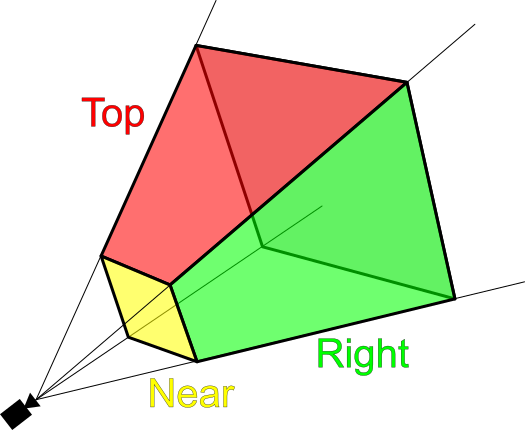
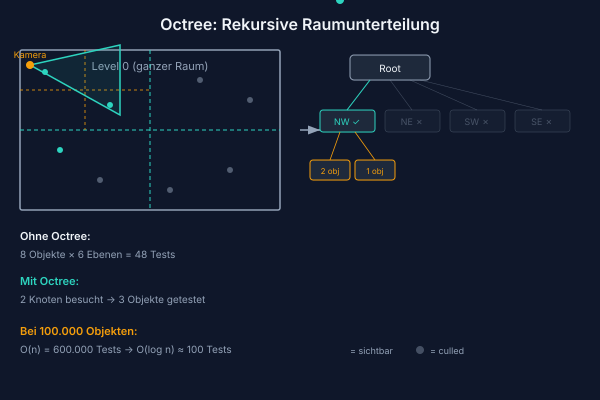
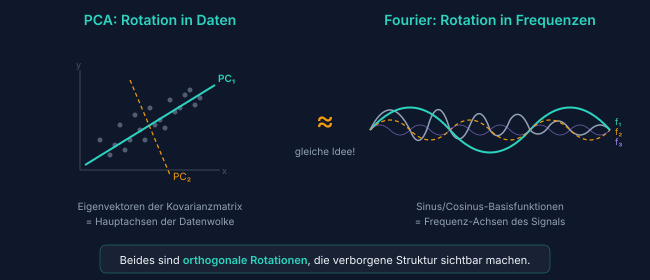
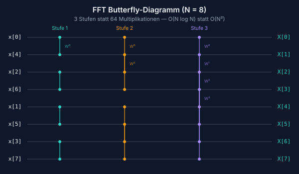
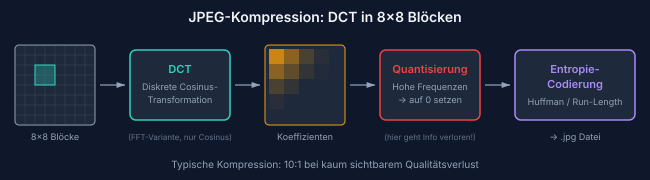
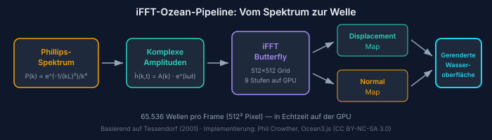

Kapitel 1
Probier es selbst
Bevor wir reden — flieg erst mal. Und schau dir dabei das Wasser an.
Der Simulator läuft komplett im Browser. Keine Installation, kein Download.
Jetzt fliegen →Steuerung per Tastatur:
SPACE Flügelschlag A/D Drehen W Sturzflug S Steigen T Webcam an/aus

Fliegst du über das Meer und siehst, wie sich die Wellen an jedem Kamm anders brechen, wie der Horizont ein gezacktes Band ist statt einer sauberen Linie — dann schaust du auf Fourier.
Dies ist die Geschichte einer mathematischen Idee. Joseph Fourier hatte 1822 eine Einsicht, die so fundamental war, dass sie 200 Jahre später buchstäblich in jedem JPEG-Bild, in jeder MP3-Datei, in jedem AAA-Ozean-Shader und auf jedem modernen Chip steckt. Die Idee selbst ist verblüffend einfach. Ihre Konsequenzen sind nahezu grenzenlos.
Wir werden sie auseinandernehmen. Aber erst erkläre ich dir, was du gerade geflogen bist.
Open Source: Der gesamte Quellcode des Simulators ist öffentlich.
Kapitel 2
Eine Welt aus dem Nichts — Prozedurale Landschaft
Terrain ohne einen einzigen Vertex von Hand
Die Landschaft, über die du geflogen bist, wurde nie von einem Menschen modelliert. Kein 3D-Künstler hat einen Hügel platziert, kein Designer hat ein Tal gezogen. Stattdessen beschreibt Mathematik, was wo entstehen soll, und der Computer generiert bei jedem Laden eine leicht andere, aber immer plausible Insel.
Das Grundprinzip ist überraschend schlicht: Parabeln als Bausteine. Stell dir einen flachen Tisch vor. Jetzt legst du unsichtbare Hügel darauf — jeden definiert durch einen Mittelpunkt \((c_x, c_z)\), einen Radius \(r\) und eine Höhe \(h\). An jedem Punkt des Terrains addierst du alle Beiträge:
900 positive Parabeln formen die Hügel. 270 negative Parabeln schneiden Täler hinein. Ein radialer Falloff lässt die Insel an den Rändern sanft ins Meer absinken. Das Ergebnis wirkt natürlich, weil Hügel in der Natur tatsächlich durch Überlagerung verschiedener Prozesse entstehen — Tektonik, Erosion, Ablagerung. Wir approximieren diesen Prozess mit Tausenden einfacher Funktionen.

Fünf Texturschichten
Geometrie allein erzeugt Klumpen, keine Landschaft. Farbe und Textur machen den Unterschied. Ein GLSL-Fragment-Shader berechnet pro Pixel, welche der fünf Texturschichten dominant ist: Sand am Strand, Gras auf den Hügeln, Erde in mittleren Höhen, Fels an Steilhängen, Schnee auf den Gipfeln. Die Übergänge verlaufen über eine smoothstep-Funktion, die scharfe Kanten vermeidet.


Gebäude entstehen ähnlich prozedural: fünf Typen (Wohnhäuser, Scheunen, Türme, Hotels, Hochhäuser), platziert durch Noise-Funktionen in flachen Uferbereichen. Eine zweite Noise-Ebene trennt Stadt- von Waldzonen, damit Bäume nicht durch Hausdächer wachsen. 900 Gebäude, 100.000 Bäume — alle generiert, keines von Hand gesetzt.

Zusammenfassung
900 Parabeln + negative Arcs + radialer Insel-Falloff = eine natürliche Landschaft, ohne je einen Vertex manuell zu setzen. Fünf Texturschichten, 100.000 Bäume und 900 Gebäude — alles prozedural.
Kapitel 3
Der Vogel fliegt — Flugphysik und Webcam
Von der Kamera mit Höhenangst zum echten Gleiten
Das Terrain war da. Aber ein Vogel, der nicht fliegt, ist nur eine Kamera mit Höhenangst. Der erste Ansatz war ein simples Arcade-Modell: Drück eine Taste, steig nach oben. Es funktionierte technisch. Aber es fühlte sich an wie ein Aufzug mit Panoramafenster — kein Gleiten, kein Auftrieb, kein Fliegen.
Also bauten wir ein aerodynamisches Modell. Die Zentraleinsicht: Auftrieb hängt vom Quadrat der Geschwindigkeit ab. Das ist der dynamische Druck — dieselbe Physik, die echte Vögel und Flugzeuge in der Luft hält.
Der erste Flügelschlag brachte nichts. Gravity gewann. Immer. Das Problem: Wir hatten den Wing-Incidence-Winkel vergessen. Echte Vogelflügel sind nicht flach — sie haben einen eingebauten Anstellwinkel von etwa 3°, der auch im Geradeausflug minimalen Auftrieb erzeugt. Ohne ihn ist der Flügel ein Brett, und ein Brett fällt. Sechs Iterationen des Physikmodells später stimmte das Verhältnis von Schwerkraft, Auftrieb und Flügelschlag. Bis ein Sturzflug sich gefährlich anfühlte und ein Looping den Magen zusammenzog.

Arme als Flügel: MediaPipe Pose Detection
Und dann der verrückte Teil: Was wäre, wenn du nicht die Tastatur benutzt, sondern deine Arme? MediaPipe Pose Detection macht das möglich. Googles ML-Modell erkennt 33 Körperpunkte in Echtzeit — direkt im Browser, ohne Server, ohne Cloud. Schultern, Ellbogen, Handgelenke: alles, was wir brauchen.
Die Logik: Wir messen die Höhe beider Handgelenke relativ zu den Schultern. Hohe Hände = Flügel oben. Niedrige Hände = Flügel unten. Die Änderungsrate dazwischen = Flügelschlag-Stärke. Das Webcam-Bild ist gespiegelt, Landmarks können verschwinden, die Erkennungsrate schwankt mit der Beleuchtung. Unsere Lösung war Graceful Degradation: Wenn MediaPipe keine Pose erkennt, fällt das System leise auf Tastatursteuerung zurück. Kein Fehler, kein Popup.
Das Gefühl, wenn du zum ersten Mal die Arme hebst und der Vogel steigt — das ist der Moment, in dem aus einem technischen Projekt etwas wird, das man Leuten zeigen möchte.
Vom Webcam-Spiel zum Phone-Tilt: Mobile Steuerung
Die Webcam-Steuerung funktioniert auf dem Desktop wunderschön — aber auf dem Handy ist sie unpraktisch. Also haben wir für birdybird, den mobile-first Ableger, eine zweite Steuerungsebene gebaut: Tilt-Fliegen. Das Handy ist der Steuerknüppel. Neigen nach links = Linkskurve. Neigen nach vorne = Sturzflug. Schütteln = Flügelschlag.
Die Browser-API heißt DeviceOrientationEvent und liefert drei Winkel: alpha (Kompass-Drehung), beta (Vor-/Zurückneigen), gamma (Seitneigung). Klingt einfach — in der Praxis hatten wir zwei größere Stolpersteine.
Problem 1: Die Achsen bedeuten bei jedem Spieler etwas anderes. Hältst du das Handy flach vor dir wie ein Tablett, oder hochkant wie einen Comic? Links oder rechts gehaltet? Die sensorischen Rohdaten unterscheiden sich drastisch je nach Haltung — eine fest verdrahtete Achsenzuordnung scheitert bei der Hälfte aller Nutzer. Lösung: Ein 6-Schritte-Kalibrierungs-Assistent beim ersten Start. Der Spieler hält das Handy in Ruhe-, Links-, Rechts-, Steig-, Sturz- und schüttelt einmal — wir messen jeweils die Achsen-Deltas und bestimmen daraus, welche Sensor-Achse (beta oder gamma) die größte Spannweite bei welcher Geste aufweist. Das Ergebnis wird in localStorage gespeichert; beim nächsten Start darf der Spieler entscheiden, ob er das Profil wiederverwenden oder neu kalibrieren will.
Problem 2: iOS 13.4+ hat eine doppelte Permission-Falle. Seit Apple Nutzertracking über Bewegungssensoren fürchtet, müssen Web-Apps auf iOS zwei separate Permissions anfordern: DeviceOrientationEvent.requestPermission() für die Neigungswinkel, DeviceMotionEvent.requestPermission() für die Beschleunigung (und damit den Schütteln-zum-Flappen-Gest). In unserem ersten Release haben wir nur die erste angefordert — mit der Folge, dass der Kalibrierungs-Schritt „Flügelschlag!“ unendlich lange wartete, weil devicemotion-Events nie feuerten. Zweiteilefix: beide Permissions parallel anfordern, plus ein 8-Sekunden-Timeout mit „Skip“-Button für den Fall, dass Events trotzdem ausbleiben.
Zusammenfassung
Aerodynamisches Physikmodell (Bernoulli-Auftrieb), 6 Iterationen bis zum richtigen Gefühl, MediaPipe-Webcam-Steuerung mit Graceful Degradation — plus ein Tilt-Steuerungs-Pfad mit 6-Schritte-Kalibrierung für Mobilgeräte.
Kapitel 4
100.000 Bäume — Octree und Frustum Culling
Das Problem: 60 FPS mit 100.000 Objekten
Eine Insel ohne Wälder wirkt kahl. Also platzierten wir Bäume. Viele Bäume. 100.000 Bäume.
Das naïve Vorgehen: Jeden Frame alle 100.000 Bäume an die GPU schicken und zeichnen lassen. Ergebnis: 4 FPS. Der Rechner kam nicht hinterher. Das überrascht nicht — selbst wenn ein Baum nur 200 Polygone hat, sind 100.000 Bäume 20 Millionen Polygone pro Frame. Eine moderne GPU kann das zwar theoretisch verarbeiten, aber der Overhead pro Draw Call ist das eigentliche Problem. Jede Einzel-Zeichenanweisung verursacht CPU-GPU-Kommunikation. 100.000 Draw Calls können auch die schnellste GPU in die Knie zwingen.
Die Lösung ist zweistufig: Erst entscheiden, welche Objekte überhaupt sichtbar sein können. Dann alle sichtbaren auf einmal zeichnen. Der erste Schritt ist Frustum Culling. Der zweite Schritt braucht eine räumliche Datenstruktur: den Octree.
Das View Frustum: Sechs Ebenen definieren die Welt
Eine Perspektivkamera sieht keinen Vollkreis, sondern einen Frustum — einen Kegelstumpf, begrenzt durch sechs Ebenen:
- Near Plane und Far Plane: minimale und maximale Sichtdistanz
- Left, Right, Top, Bottom: die vier Seitenflächen des Sichtkegels
Jede dieser Ebenen lässt sich als Normalenvektor \(\mathbf{n}\) und einen Offset \(d\) schreiben. Ein Punkt \(\mathbf{p}\) liegt auf der sichtbaren Seite einer Ebene, wenn:
Ein Objekt ist sichtbar, wenn es auf der sichtbaren Seite aller sechs Ebenen liegt — oder genauer: wenn seine AABB (achsenparalleler Begrenzungsquader) zumindest teilweise innerhalb des Frustums liegt. Die Frustum-Ebenen werden aus der Projektionsmatrix der Kamera extrahiert. Pro Frame: sechs Ebenengleichungen aus der aktuellen Kameraposition berechnen, fertig.

Der naive Frustum-Check hat Komplexität \(O(n)\) — wir müssen jedes der 100.000 Objekte gegen die sechs Ebenen prüfen. Bei 60 FPS sind das 6 Millionen Ebenenprüfungen pro Sekunde. Das ist überraschend schnell — CPUs können das. Aber die Frage ist, ob wir klug vorgehen können: Wenn wir wissen, dass alle Bäume in einem bestimmten Raumbereich außerhalb des Frustums liegen, müssen wir die einzelnen Bäume gar nicht erst prüfen.
Der Octree: Von \(O(n)\) zu \(O(\log n)\)
Ein Octree unterteilt den Raum rekursiv in acht gleichgroße Würfel. Jeder Würfel, der Objekte enthält, wird weiter unterteilt — bis zu einer Mindestgröße oder einer Maximaltiefe. Das Ergebnis ist ein Baum: die Wurzel repräsentiert die gesamte Welt, die Blätter kleine Raumzellen mit je wenigen Objekten.

Beim Frustum Culling durchläuft der Algorithmus den Octree von der Wurzel nach unten:
- Prüfe, ob die AABB des aktuellen Knotens komplett außerhalb des Frustums liegt. Wenn ja: gesamten Teilbaum verwerfen. Kein einziges Kind wird noch betrachtet.
- Liegt der Knoten komplett innerhalb? Dann alle Objekte darin rendern, ohne weitere Prüfungen.
- Liegt er teilweise innerhalb? Alle acht Kinder rekursiv prüfen.
Im Idealfall — wenn ein großer Teil der Welt hinter der Kamera liegt — verwirft der Algorithmus ganze Äste des Baums auf hohen Ebenen. Von 100.000 Objekten werden dann nur ein paar tausend Octree-Knoten überhaupt besucht. Die effektive Komplexität nähert sich \(O(\log n)\) — logarithmisch statt linear.
Technische Kennzahlen
- 100.000 Bäume in der Szene
- Octree-Tiefe: 6 Ebenen, bis zu 8&sup6; = 262.144 Blätter (in der Praxis deutlich weniger, da die Insel nicht kubisch ist)
- Typisch gerendert pro Frame: 3.000 – 5.000 Bäume
- Faktoreinsparung: ~25× weniger Draw Calls gegenüber dem naïven Ansatz
Der Octree-Aufbau geschieht einmal beim Laden, in etwa 80 ms. Danach ist er statisch — Bäume bewegen sich nicht. Die Abfrage pro Frame dauert unter 0,5 ms. Das gibt uns 60 FPS mit einer Welt, die naïv unrenderable wäre.
Wenn ein InstancedMesh zu groß wird: Per-Cluster-Split
Beim Port auf WebGPU stießen wir auf eine zweite Perf-Mauer — diesmal nicht wegen der Bäumezahl, sondern wegen der Struktur unseres Meshes. Der Forest wird aus einem InstancedMesh gerendert: eine Zeichenanweisung für alle Bäume, mit per-Instanz Positions-Matrix. Das ist effizienter als 100.000 separate Draw Calls — aber es macht Frustum-Culling unmöglich, denn ein InstancedMesh hat nur eine Bounding-Sphere, die alle Instanzen umschließen muss. In unserem Fall war diese Sphere so groß wie die gesamte Welt. Three.js konnte sie also nie verwerfen, egal wohin die Kamera schaute. Der Vertex-Shader lief pro Frame über alle ~1 Million Instanzen, selbst wenn die Kamera in die leere Ecke schaute.
Die Lösung: den monolithischen InstancedMesh nach der Generierung in 20 kleinere Sub-Meshes aufteilen, einen pro Baumcluster. Jede Sub-Mesh behält dieselbe Material- und Geometrie-Referenz (keine Speicherverdopplung), hat aber nur die Instanz-Matrizen für ihren Cluster — und damit eine enge Bounding-Sphere. Three.js' Frustum-Culler greift jetzt cluster-genau zu: Bäume außerhalb des Sichtfelds werden komplett aus der Pipeline geworfen, Vertex-Shader inklusive.
Gemessener Effekt in unserem Perf-Benchmark: ~3× mehr FPS auf WebGPU in allen Szenarien (z.B. 36 → 124 FPS über Ozean, 34 → 71 FPS im Wald). Die klassische Lektion: Bounding-Volume-Granularität ist nicht Implementierungsdetail, sondern architekturelle Entscheidung.
Warum das für Fourier relevant ist
Octree und Frustum Culling sind Raumpartitionierungstechniken: Sie lösen das Problem, welche Teile einer komplexen Struktur relevant sind. Die Fourier-Transformation löst dasselbe Problem — aber im Frequenzraum statt im geometrischen Raum. Beide Ideen basieren auf derselben Grundintuition: Nicht alles gleichzeitig betrachten. Verständnis kommt durch Zerlegung.
Kapitel 5
Die Fourier-Idee
Eine Behauptung, die vernünftige Mathematiker empörte
Im Jahr 1807 legte Joseph Fourier der Pariser Académie des Sciences ein Manuskript vor. Seine Behauptung war schlicht und gleichzeitig ungeheuerlich: Jede periodische Funktion lässt sich als unendliche Summe von Sinus- und Kosinusfunktionen darstellen. Nicht manche Funktionen. Alle. Auch eckige Rechteckfunktionen. Auch Sägezähne. Auch sprunghafte Stufenfunktionen, die offensichtlich nicht glatt sind.
Lagrange, einer der größten Mathematiker seiner Zeit, hielt die Behauptung für falsch und blockierte die Veröffentlichung. Erst 1822 erschien Fouriers Buch Théorie analytique de la chaleur — und die Mathematik der nächsten zwei Jahrhunderte war eine andere.
Was ist so besonders an Sinus und Kosinus? Sie sind die natürlichen Basisfunktionen periodischer Phänomene. Jedes Ding, das schwingt — eine Gitarrensaite, eine Meereswelle, das elektrische Feld eines Lasers — schwingt im Kern wie ein Sinus. Die Fourier-Reihe sagt: Jede beliebige periodische Form ist eine Mischung solcher reiner Schwingungen.
Die Fourier-Reihe
Sei \(f(t)\) eine periodische Funktion mit Periode \(T\). Dann gilt:
Die Koeffizienten \(a_n\) und \(b_n\) bestimmen, wie stark jede Frequenz \(n/T\) in der Funktion vertreten ist. Sie lassen sich durch Integration berechnen:
Was bedeuten diese Integrale geometrisch? Sie messen, wie ähnlich die Funktion \(f\) jeweils einer Sinusschwingung mit Frequenz \(n/T\) ist. Multipliziere \(f\) mit einem Kosinus und integriere — du erhälst die Korrelation. Fourier-Analyse ist systematische Korrelation mit allen möglichen Frequenzen.
Die Fourier-Transformation
Für nicht-periodische Funktionen verallgemeinert sich die Reihe zur Fourier-Transformation:
Hier ist \(\hat{f}(\xi)\) eine komplexe Zahl für jede Frequenz \(\xi\). Der Betrag \(|\hat{f}(\xi)|\) ist die Amplitude, das Argument \(\arg(\hat{f}(\xi))\) ist die Phase der jeweiligen Frequenzkomponente. Und die Umkehrung — die inverse Fourier-Transformation — rekonstruiert die Originalfunktion:
Damit ist die Fourier-Transformation ein vollständig umkehrbarer Koordinatenwechsel: von der Zeit- oder Ortsdomäne in die Frequenzdomäne und zurück. Kein Information geht verloren. Es ist buchstäblich nur eine andere Sichtweise auf dieselben Daten.
Die Analogie zu PCA: ein rotiertes Koordinatensystem
Wer den Blogpost über Eigenwerte und KI gelesen hat, erkennt eine tiefe Parallele. PCA dreht das Koordinatensystem so, dass die Achsen mit den Richtungen größter Varianz im Datensatz ausgerichtet sind. Die neuen Achsen sind die Eigenvektoren der Kovarianzmatrix — orthogonale Basisvektoren, die optimal zu den Daten passen.
Die Fourier-Transformation tut strukturell dasselbe: Sie rotiert das Funktionenraum-Koordinatensystem in die Basis der Sinusfunktionen. Diese Basis ist orthogonal im Sinne des Funktionen-Skalarprodukts — zwei Sinusfunktionen verschiedener Frequenzen sind senkrecht aufeinander:
Der Unterschied: PCA findet die optimale Basis aus den Daten selbst. FFT verwendet eine feste, universelle Basis — die Frequenzen. PCA zerlegt in Richtungen maximaler Varianz; FFT zerlegt in Schwingungsfrequenzen. Beide sind orthogonale Projektionen auf eine neue Basis.

Eine weitere Parallele findet sich in der Cochlea des menschlichen Ohrs: Die Schnecke des Innenohrs ist eine mechanische Fourier-Analyse. Unterschiedliche Stellen der Basilarmembran resonieren auf unterschiedliche Frequenzen — das Ohr zerlegt den Schall in seine Fourier-Komponenten, bevor das Gehirn ihn verarbeitet. Evolution hat dieselbe Mathematik 500 Millionen Jahre früher „entdeckt“ als Fourier.
Die Fast Fourier Transform: von \(O(N^2)\) zu \(O(N \log N)\)
Die diskrete Fourier-Transformation (DFT) übersetzt die Fourier-Analyse auf endliche Folgen von \(N\) Messwerten:
Naïv berechnet: für jeden der \(N\) Ausgabewerte \(X[k]\) muss über alle \(N\) Eingabewerte summiert werden. Das ist \(O(N^2)\). Bei \(N = 65.536\) — der Auflösung unseres Ozeansimulators — wären das \(4{,}3 \cdot 10^9\) komplexe Multiplikationen. Pro Frame. Unmöglich.
1965 publizierten James Cooley und John Tukey einen Algorithmus, der die DFT in \(O(N \log N)\) berechnet: die Fast Fourier Transform (FFT). Die Idee: Die DFT einer Folge der Länge \(N\) kann in zwei DFTs der Länge \(N/2\) zerlegt werden — eine für die geraden, eine für die ungeraden Indizes. Dieses Divide-and-Conquer-Schema wird rekursiv angewendet, bis man bei DFTs der Länge 1 ankommt (Trivialergebnis). Mit \(\log_2(N)\) Rekursionsstufen und \(N/2\) Operationen pro Stufe ergibt sich:
Bei \(N = 65.536 = 2^{16}\): DFT bräuchte \(4{,}3 \cdot 10^9\) Operationen, FFT braucht \(5{,}2 \cdot 10^5\). Faktor 8.000 schneller.
Der Datenfluss des Cooley-Tukey-Algorithmus sieht bei grafischer Darstellung aus wie ein Schmetterling: Jede Stufe kombiniert Ergebnisse paarweise über komplexe Rotationen um die Twiddle-Faktoren \(W_N^k = e^{-2\pi ik/N}\). Dieser visuelle Eindruck hat dem Verfahren seinen Namen gegeben: Butterfly-Algorithmus.

Die Kernidee
Fourier 1822: Jede Funktion = Summe von Sinusfunktionen. Cooley & Tukey 1965: Diese Summe lässt sich in O(N log N) statt O(N²) berechnen. Diese beiden Ideen zusammen haben Signalverarbeitung, Bildkompression, Audiokodierung und GPU-basierte Ozeanphysik erst möglich gemacht.
Kapitel 6
Fourier überall — Bilder, JPEG, MP3, Phasenkorrelation
Bilder im Frequenzraum
Die Fourier-Transformation ist nicht auf zeitabhängige Signale beschränkt. Bilder sind zweidimensionale Funktionen — die Helligkeit an jedem Pixel als Funktion von \((x, y)\). Also gibt es auch eine 2D-FFT:
Was bedeuten die Frequenzen bei Bildern? Niedrige Frequenzen — Punkte nahe dem Zentrum des Frequenzraums — kodieren langsame Änderungen: Hintergründe, Farbverläufe, die grobe Struktur des Bildes. Hohe Frequenzen — Punkte am Rand — kodieren schnelle Änderungen: Kanten, feine Texturen, Details.
Diese Zerlegung hat eine wichtige praktische Konsequenz: Die meisten natürlichen Bilder haben eine stark geclusterte Energieverteilung. Fast alle Information steckt in den niedrigen Frequenzen. Die hohen Frequenzen tragen wenig bei — und sie können deshalb weggeworfen oder vergröbert werden, ohne dass das menschliche Auge den Unterschied bemerkt.
Die 2D-FFT ermöglicht auch schnelle Faltung: Einen Weichzeichner auf ein Bild anzuwenden ist im Ortsraum eine teure Faltungsoperation (\(O(N^2 \cdot K^2)\) für ein \(N\times N\)-Bild mit einem \(K\times K\)-Kernel). Im Frequenzraum ist es eine einfache punktweise Multiplikation (\(O(N^2)\)). Damit ist der typische Weg: FFT berechnen, multiplizieren, inverse FFT — und das schon bei moderat großen Bildern deutlich schneller als direkte Faltung.

JPEG: Fourier in 8×8-Blöcken
Jedes JPEG-Bild, das du je gesehen hast, steckt voller Fourier-Mathematik — in einer leicht modifizierten Form. JPEG verwendet die Diskrete Kosinus-Transformation (DCT), eine nahe Verwandte der DFT, die nur reelle Zahlen produziert und sich für die Bildkompression als besser geeignet erwies.
Der JPEG-Kompressionsalgorithmus arbeitet in fünf Schritten:
- Aufteilung: Das Bild wird in 8×8-Pixel-Blöcke zerlegt.
- DCT: Jeder Block wird in 64 Frequenzkoeffizienten verwandelt — von DC (Gleichanteil, mittlere Helligkeit) bis zu den höchsten Ortsfrequenzen.
- Quantisierung: Die Koeffizienten werden durch eine Quantisierungsmatrix geteilt und gerundet. Niedrige Frequenzen werden fein erhalten, hohe Frequenzen grob. Das ist der verlustbehaftete Schritt.
- Runlängen-Kodierung: Koeffizienten werden in Zickzack-Reihenfolge gelesen — von niedrigen zu hohen Frequenzen. Da hohe Frequenzen nach der Quantisierung oft Null sind, entstehen lange Nullfolgen, die kompakt kodiert werden.
- Huffman-Kodierung: Lossless-Kompression der quantisierten Werte.
Das Ergebnis: Ein Bild, das mit Qualität 80 gespeichert wird, behält präzise die niedrigen Frequenzen (grobe Struktur) und quantisiert die hohen Frequenzen (feine Details) grob. Das menschliche Auge bemerkt meist nur den Unterschied, wenn die Qualität sehr niedrig gesetzt wird und die typischen JPEG-Artefakte — blockige 8×8-Muster — sichtbar werden. Das sind buchstäblich die 8×8-DCT-Blöcke, die sich bei extremer Kompression durchdrücken.
MP3 und MDCT: Fourier für das Ohr
MP3 macht Ähnliches für Audio. Die Modified Discrete Cosine Transform (MDCT) zerlegt das Audiosignal in Frequenzbänder — ähnlich wie die Cochlea des Innenohrs. Dann nutzt das psychoakustische Modell eine Einsicht: Leise Frequenzen, die neben lauten liegen, werden vom Gehör maskiert und können weggeworfen werden, ohne das die meisten Menschen den Unterschied bemerken. Eine detailliertere Diskussion der Audioperzeption, Cochlea und Obertonreihe findet sich im Blogpost über die Mathematik der Musik.
Phasenkorrelation: automatische Video-Musik-Synchronisation
Eine weniger bekannte Anwendung: Phasenkorrelation für die automatische Suche nach passenden Musikteilen. Beim Schnitt von Videos kommt es vor, dass man zwei ähnliche Audiosequenzen hat — zwei Takes desselben Musikstücks — und exakt bestimmen möchte, an welcher Stelle der eine zum anderen passt.
Im Zeitraum wäre das eine teure Kreuzkorrelation: Alle möglichen Verschiebungen durchprobieren, für jede die Korrelation berechnen. Im Frequenzraum ist es ein Einzeiler: FFT berechnen, Quotienten der normalisierten Spektren bilden, inverse FFT — das Ergebnis ist ein Impuls genau an der Verschiebung mit maximaler Übereinstimmung. Exakte Synchronisationssuche in \(O(N \log N)\) statt \(O(N^2)\).
Und damit kommen wir zur entscheidenden Frage: Was passiert, wenn man die Fourier-Transformation rückwärts anwendet — wenn man nicht ein Signal analysiert, sondern aus einem Frequenzspektrum ein Signal synthetisiert?
Fourier in der Praxis
- 2D-FFT: Schnelle Bildfilterung, Faltung als Multiplikation im Frequenzraum
- JPEG (DCT): 8×8-Blöcke, Quantisierung hoher Frequenzen, Blockierartefakte bei niedriger Qualität
- MP3 (MDCT): Psychoakustische Maskierung, Frequenzbänder wie die Cochlea
- Phasenkorrelation: Automatische Synchronisation in \(O(N \log N)\)
Kapitel 7
Von der Statistik zum Ozean — iFFT auf der GPU
Was passiert, wenn man Fourier rückwärts dreht?
Fourier-Analyse nimmt ein Signal und findet die enthaltenen Frequenzen. Die inverse Fourier-Transformation (iFFT) macht das Gegenteil: Sie nimmt ein Frequenzspektrum und synthetisiert daraus ein Signal. Du definierst, welche Frequenzen mit welcher Amplitude und Phase vorhanden sein sollen — und die iFFT baut daraus die zugehörige Wellenform.
Genau das macht der Ozeansimulator. Nicht mit Audiosignalen, sondern mit Wasseroberflächen.
Das Phillips-Spektrum: Ozeane im Frequenzraum
Owen Phillips formulierte 1957 ein statistisches Modell dafür, wie sich Wellenenergie auf verschiedene Frequenzen und Richtungen verteilt — abhängig von Windgeschwindigkeit, Windrichtung und dem sogenannten Fetch (der Strecke, über die der Wind geweht hat). Das Ergebnis: das Phillips-Spektrum:
Dabei ist \(\mathbf{k}\) der Wellenvektor im Frequenzraum, \(k = |\mathbf{k}|\) seine Länge, \(L = v^2/g\) die charakteristische Wellenlänge bei Windgeschwindigkeit \(v\) und \(g = 9{,}81\,\text{m/s}^2\), und \(\hat{\mathbf{w}}\) die Windrichtung. Das Skalarprodukts-Quadrat \(|\hat{\mathbf{k}} \cdot \hat{\mathbf{w}}|^2\) unterdrückt Wellen senkrecht zum Wind.
Dieses Spektrum lebt vollständig im Frequenzraum: Jeder Punkt in einem 2D-Gitter entspricht einer Wellenfrequenz und -richtung — nicht einer Position auf dem Wasser. Es beschreibt keine konkrete Welle, sondern eine Wahrscheinlichkeitsverteilung von Wellen.

Von der Statistik zur Welle: Tessendorfs Methode
Der britische Mathematiker und Ozeanograph Owen Phillips lieferte 1957 die Statistik. Die erste FFT-basierte Ozean-Visualisierung kam 1987: Gary Mastin, Peter Watterberg und John Mareda publizierten im IEEE Computer Graphics and Applications den Aufsatz "Fourier Synthesis of Ocean Scenes" — die erste Anwendung der FFT-Methode in der Computergrafik.
Der große Durchbruch für Film und Games kam 2001: Jerry Tessendorf von Industrial Light & Magic veröffentlichte für die SIGGRAPH-Kurse sein Paper "Simulating Ocean Water" — bis heute die Standard-Referenz. Tessendorf hat die Methode nicht erfunden, aber er hat sie so klar ausgearbeitet und auf die Anforderungen der Filmproduktion abgestimmt, dass sein Paper zum De-facto-Lehrbuch wurde.
Die Methode in fünf Schritten:
- Spektrum initialisieren: Für jeden Punkt \((k_x, k_y)\) eines 512×512-Frequenzgitters berechne \(P(\mathbf{k})\) aus dem Phillips-Spektrum. Multipliziere mit zufälligem Gauß-Rauschen, um realistische Phasenvarianz zu erhalten.
- Zeitentwicklung: Jede Frequenz breitet sich mit der Dispersionsrelation von Tiefseewellen aus: \(\omega(\mathbf{k}) = \sqrt{g\, k}\). Multipliziere jeden Spektralwert mit \(e^{i\omega t}\) für den aktuellen Zeitpunkt \(t\).
- iFFT auf der GPU: Wende die inverse 2D-FFT an. Das Ergebnis ist eine 512×512-Heightmap — die Wellenhöhe an jedem Punkt des Rasters.
- Displacement und Normalen: Ein zweiter iFFT-Durchgang erzeugt horizontale Verschiebungen (für die charakteristischen spitzen Wellenkämme) und ein dritter die Oberflächennormalen für korrekte Lichtbrechung.
- Rendering: Die Displacement-Map verschiebt die Vertices des Wasser-Meshes; die Normal-Map steuert die Reflexion.
Bei einer 512×512-Auflösung sind das \(512^2 = 262.144\) Spektralwerte. Jeder Wert repräsentiert eine einzelne Wellenfrequenz und -richtung. Das iFFT kombiniert alle 262.144 Frequenzen zu einer einzigen, kohärenten Wasseroberfläche. 65.536 sichtbare Wellen pro Frame ist ein konservatives Maß für das, was der Ozean des Simulators tatsächlich darstellt.
Der Butterfly-Algorithmus auf der GPU
Auf der CPU wäre selbst die FFT zu langsam für 60 FPS: Eine 512×512-2D-FFT umfasst 512 zeilenweise 1D-FFTs der Länge 512, dann 512 spaltenweise 1D-FFTs — zusammen 1.024 FFTs à 1.310.720 Operationen. Auf der GPU wird daraus eine Pipeline aus Fragment-Shadern:
Eine 1D-FFT der Länge 512 hat \(\log_2(512) = 9\) Butterfly-Stufen. Jede Stufe rendert in ein Float-Framebuffer-Texture-Target. Das Ergebnis wird als Eingabe für die nächste Stufe verwendet — Ping-Pong-Buffering zwischen zwei Texturen. Neun Render-Passes, und die Zeilen sind fertig. Dasselbe transponiert für die Spalten. Am Ende stehen die Displacement-Map und die Normal-Map als Texturen bereit, die direkt als Vertex-Shader-Uniforms eingesetzt werden.
Die JavaScript-Implementierungskette, die im Simulator läuft, ist das Ergebnis eines Jahrzehnts Open-Source-Arbeit:
- 2013 — WebGL-Demo von David Li (david.li/waves/), Umsetzung der Tessendorf-Mathematik in Fragment-Shadern
- 2014 — Three.js-Portierung durch Aleksandr Albert
- 2015 — wiederverwendbares Three.js-Modul von Jérémy Bouny (github.com/jbouny/ocean)
- 2023 — Three.js-Aktualisierung durch Phil Crowther, veröffentlicht auf philcrowther.com/Aviation
- 2023 — GLSL3/WebGL2-Upgrade der Shader durch Attila Schroeder
Das Modul Ocean3.js — ca. 570 Zeilen WebGL2-Code — steht unter CC BY-NC-SA 3.0. Die Lizenz ist explizit: Verwendung erlaubt für nichtkommerzielle Zwecke mit Namensnennung. Die Autoren sind David Li, Aleksandr Albert, Jérémy Bouny, Phil Crowther und Attila Schroeder; die wissenschaftliche Grundlage ist Tessendorf (2001) und Mastin et al. (1987), die Wellenstatistik stammt von Phillips (1957). Der Simulator gibt diese Kette vollständig an.
Die Integration
Die eigentliche Integrationsarbeit war mechanisch aber präzise: Die Water-Klasse von Three.js musste die FFT-Normal-Map statt ihrer Default-Textur verwenden, und die FFT-Displacement-Map musste per Shader-String-Injection in den Vertex-Shader eingeschleust werden:
// WaterPlane.js — hybride Konstruktion
const ocean = new Ocean(renderer, {
Res: 512, Siz: 2400, // 512×512 Gitter, 2.4 km Tile-Größe
WSp: 18, WHd: 295, Chp: 1.5 // Wind 18 m/s, Richtung 295°, Choppiness 1.5
});
const water = new Water(geometry, {
waterNormals: ocean.normalMapFramebuffer.texture, // FFT-Normal-Map
sunColor: 0xffeedd,
sunDirection: sunPos.normalize(),
});
// Displacement-Map per Shader-Injection in den Vertex-Shader einschleusen
water.material.uniforms.oceanDisplacement = {
value: ocean.displacementMapFramebuffer.texture
};
water.material.vertexShader =
'uniform sampler2D oceanDisplacement;\n' +
water.material.vertexShader
.replace('void main() {',
'void main() { vec3 oceanDisp = texture2D(oceanDisplacement, uv).rgb;')
.replace(/vec4\s*\(\s*position\s*,\s*1\.0\s*\)/g,
'vec4(position + oceanDisp, 1.0)');Elf Zeilen Glue-Code für eine Ozean-Simulation, die im Hintergrund eine iFFT-Pipeline auf der GPU betreibt. Die Water-Klasse liefert die Sonnenreflexion; die iFFT erzeugt die physikalisch fundierte, animierte Wellenoberfläche.
Von Ocean3 zu Ocean4: Die Migration auf WebGPU
Alles bisher Beschriebene läuft auf WebGL2 — der Grafik-API, die 2017 die meisten Browser erreichte. Inzwischen gibt es WebGPU, eine deutlich modernere API, die direkte Compute-Shader erlaubt (also nicht nur Fragment- und Vertex-Shader) und eine dramatisch effizientere Pipeline-Konfiguration ermöglicht. Chrome und Firefox unterstützen WebGPU seit 2023, Safari seit iOS 18.
Die WebGPU-Nachfolgevariante Ocean4.js ersetzt die Fragment-Shader-Pipeline durch WGSL-Compute-Shader. Statt neun Render-Passes mit Ping-Pong-Buffering pro 1D-FFT gibt es jetzt Compute-Dispatches, die direkt in StorageTextures schreiben. Für uns bedeutete die Migration: den ganzen Renderer-Pfad doppeln, ShaderMaterial durch TSL NodeMaterial ersetzen, Ocean3 gegen Ocean4 austauschen. Für birdybird ist WebGPU jetzt Default; WebGL2 läuft weiter als Fallback für ältere Geräte.
Cascaded Spectra: Drei Wellenspektren überlagert
Ein einzelnes FFT-Tile macht überraschend einheitliche Wellen — du siehst über einen weiten Ozean dominant eine Wellenlänge und ihre Oberschwingungen. Reale Meere überlagern viel mehr Skalen: Grund-Dünung von 100+ m, Wind-Chop von 10-30 m, Kleinst-Ripples unter 1 m. Eine cascaded-Architektur löst das (siehe Threejs-WebGPU-IFFT-Ocean von Attila Schroeder): drei parallele FFT-Spektren mit verschiedenen Tile-Größen (z. B. 250 m / 17 m / 5 m), deren Displacement- und Normal-Maps in der Wellenoberfläche summiert werden.
Eine vollständige Integration seines Systems wäre mehrere Tage Arbeit gewesen (Quadtree-Chunks, eigenes ECS-Framework, neun WGSL-Shader-Dateien). Als Zwischenschritt haben wir einen „Poor-man's Cascaded Ocean“ gebaut: drei Instanzen von Ocean4 laufen parallel mit unterschiedlichen Tile-Größen (2400 m, 300 m, 40 m) und ihre Outputs werden im Vertex- bzw. Fragment-Shader summiert. Das ist zu Testen verfügbar via ?ocean=cascaded — mit etwa 60 % FPS-Kosten, aber einer spürbar lebendigeren Oberfläche: große Dünung und feine Sparkle-Ripples koexistieren auf demselben Wasser.
Quellen & Attribution
- Phillips, O. M. (1957): „On the generation of waves by turbulent wind“
- Mastin, G., Watterberg, P., Mareda, J. (1987): „Fourier Synthesis of Ocean Scenes“, IEEE CG&A
- Tessendorf, J. (2001): „Simulating Ocean Water“ — Standard-Referenz für Film und Games
- David Li’s WebGL-Demo (2013): david.li/waves
- Phil Crowthers Three.js-Demos (2023): philcrowther.com/Aviation
- Ocean3.js, CC BY-NC-SA 3.0 — Autoren: David Li, Aleksandr Albert, Jérémy Bouny, Phil Crowther, Attila Schroeder
Kapitel 8
Wie wir gebaut haben
Ein Ticket-System als Fundament
Das Projekt begann mit einer leeren Leinwand und einer Entscheidung: kein Unity, kein Unreal, sondern pures JavaScript mit Three.js direkt im Browser. Keine App, kein Store, kein Download. Der Nutzer öffnet eine URL und fliegt.
Ich war der Product Owner. Die Vision, die ästhetischen Entscheidungen, das „das fühlt sich falsch an, mach es anders“ — das kam von mir. Claude Code war alles andere: Projektmanager, Entwickler, Tester in einer Instanz.
Claude Code setzte zu Beginn ein Ticket-System in Markdown auf — 40 Tickets, aufgeteilt in 5 Phasen, jedes mit Priorität, Abhängigkeiten und Acceptance Criteria. Die Tickets wanderten durch Ordner: backlog/ → in-progress/ → done/. Kein Jira, kein Trello — nur Dateien in einem Git-Repository.
# T018: Octree construction
Priority: P0 | Phase: 2 | Size: L
Depends on: T011
## Acceptance Criteria
- [ ] Octree builds from chunk AABBs
- [ ] Correct recursive subdivision
- [ ] Unit test with known geometry40 Tickets, alle abgearbeitet. Von „Projekt aufsetzen“ (T001) bis „Webcam-Kalibrierung glätten“ (T040). Claude Code hat sie geschrieben, implementiert und mit Playwright automatisiert getestet.
Der Prozess der iFFT-Integration
Die schwierigste Integration war der Ozean-Shader. In klassischer Entwicklung hätte das Einbinden von Ocean3.js mindestens zwei Tage gedauert: Framebuffer-Management verstehen, UV-Koordinaten für Tiling anpassen (die Insel ist 24 km breit, das Wellen-Tile nur 2,4 km), und vor allem die Water-Klasse von Three.js überlisten, damit sie die FFT-Normal-Map akzeptiert.
Mit Claude Code: unter zwanzig Minuten. Der Punkt ist nicht, dass die KI die Mathematik des Ozeans tiefer versteht als ein Lehrbuch — sondern dass sie die mechanische Arbeit der Integration eliminiert. Der Mensch sagt, was er will; die KI findet die drei Stellen im Code, an denen die Änderung passieren muss.
Das gesamte Ticket-System ist öffentlich einsehbar:
Kapitel 9
Was das über KI sagt
Die neue Rollenverteilung
Dieses Projekt hat eine Frage konkret beantwortet: Was passiert, wenn mathematisches Verständnis und maschinelle Ausführungsgeschwindigkeit zusammenkommen?
Der Mensch hat die Verbindungen gesehen. Dass die FFT, die 1965 die Signalverarbeitung revolutionierte, 2001 von Tessendorf auf Ozeanwellen angewendet wurde. Dass dasselbe mathematische Prinzip in jedem JPEG, in jeder MP3 und in der Cochlea des menschlichen Ohrs steckt. Diese konzeptuelle Verbindung — alles ist Frequenzzerlegung — ist etwas, das nur durch Verständnis sichtbar wird, nicht durch Suche.
Die KI hat die Brücken gebaut. Wenn der Mensch sagte „integriere Ocean3.js so, dass die Normal-Map direkt in den Vertex-Shader fließt“, fand die KI die drei Codestellen, schrieb den Glue-Code, identifizierte den UV-Tiling-Fehler. Wochenlange mechanische Arbeit wurde zu einem Abend.
Aber — und das ist entscheidend — die KI hat nicht von sich aus nach einer physikalisch korrekten Ozean-Implementierung gesucht. Sie hat eine flache Ebene mit einer animierten Normal-Map gebaut und war zufrieden. Erst als der Mensch erkannte, dass das Meer flach aussieht, und das Konzept eines FFT-Ozeans einbrachte, kam der Quantensprung in der Visualisierungsqualität.
Mathematische Alphabetisierung als neuer Hebel
Die entscheidende Ressource in diesem Projekt war nicht Programmierkompetenz — die liefert die KI. Die entscheidende Ressource war mathematische Alphabetisierung: das Wissen, dass die Fourier-Transformation existiert, was sie konzeptuell tut, und in welchen Kontexten sie eingesetzt wird.
Wer weiß, dass Bilder im Frequenzraum eine geclusterte Energieverteilung haben, kann JPEG-Kompression verstehen. Wer weiß, dass Ozeanwellen ein statistisches Spektrum haben, kann die Tessendorf-Methode verstehen. Wer weiß, dass Eigenvektoren und Fourier-Basisvektoren beide orthogonale Koordinatensysteme definieren, sieht die tiefe Verwandtschaft zwischen PCA und FFT.
In einer Welt, in der KI die mechanische Implementierungsarbeit übernimmt, wird das konzeptuelle Verständnis wertvoller, nicht wertloser. Es ist der Faktor, der bestimmt, welche Fragen überhaupt gestellt werden.
Der Vogel fliegt über einen Ozean, dessen Wellen auf Statistik aus dem Jahr 1957 basieren, komprimiert durch einen Algorithmus aus dem Jahr 1965, gerendert in einem Browser mit einer Technologie, die 2023 von fünf Open-Source-Entwicklern aktualisiert wurde. Jede Verbindung in dieser Kette ist sichtbar — wenn man weiß, wonach man schaut.
Jetzt, wo du weißt, was du siehst — flieg nochmal.
Zum Simulator →Verwandter Beitrag: Im Deepfakes-Post taucht die DCT wieder auf — diesmal als Beispiel für Dimensionsreduktion: 10.000 Pixel werden zu 2.500 Frequenzkoeffizienten, ohne sichtbaren Verlust. Dieselbe Mathematik, anderer Zweck.
Häufige Fragen
Was ist die Fourier-Transformation?
Die Fourier-Transformation ist ein mathematisches Verfahren, das jedes Signal — Audio, Bild, Welle — in seine Frequenzkomponenten zerlegt. Sie wandelt ein Signal aus der Zeit- oder Ortsdomäne in den Frequenzraum um: Man erhält Amplitude und Phase jeder enthaltenen Schwingungsfrequenz. Die inverse Fourier-Transformation macht das Umgekehrte: Sie synthetisiert ein Signal aus einem Frequenzspektrum. Fourier bewies 1822, dass jede periodische Funktion als Summe von Sinus- und Kosinusfunktionen dargestellt werden kann.
Wie entstehen die Ozeanwellen im Simulator?
Mithilfe der inversen Fast Fourier Transform (iFFT) auf der GPU. Das Phillips-Spektrum beschreibt statistisch, wie viel Wellenenergie bei welcher Frequenz und Richtung vorliegt — abhängig von Wind. Dieses Spektrum wird zeitlich animiert und dann per iFFT in eine Heightmap verwandelt, die das Wasser-Mesh verformt. 512×512 Spektralpunkte entsprechen 262.144 überlagerten Wellenfrequenzen pro Frame. Die Methode geht auf Jerry Tessendorf (2001) und Owen Phillips (1957) zurück; die JavaScript-Implementierung ist Ocean3.js (CC BY-NC-SA 3.0).
Was hat JPEG mit Fourier zu tun?
JPEG verwendet die Diskrete Kosinus-Transformation (DCT), eine nahe Verwandte der Fourier-Transformation. Das Bild wird in 8×8-Pixel-Blöcke zerlegt, jeder Block in Frequenzkoeffizienten umgewandelt. Niedrige Frequenzen (grobe Struktur) werden präzise gespeichert, hohe Frequenzen (feine Details) grob quantisiert — das menschliche Auge bemerkt den Unterschied kaum. Die typischen JPEG-Artefakte bei niedriger Qualität sind buchstäblich die sichtbar werdenden 8×8-DCT-Blöcke.
Was ist ein Octree, und warum braucht man ihn?
Ein Octree ist eine räumliche Datenstruktur, die den 3D-Raum rekursiv in acht gleich große Würfel unterteilt. Im Vogelflug-Simulator enthält er alle 100.000 Bäume. Statt jeden Frame alle Objekte zu prüfen (O(n)), kann der Octree ganze Äste verwerfen, wenn der enthaltene Raum außerhalb des Kamera-Frustums liegt — das nähert sich O(log n). Ergebnis: Von 100.000 Bäumen werden typischerweise nur 3.000–5.000 pro Frame tatsächlich gerendert.
Kann man mit KI wirklich einen 3D-Simulator an einem Nachmittag bauen?
Mit Einschränkungen: ja. Claude Code hat den gesamten Code geschrieben, ein 40-Ticket-System verwaltet und automatisiert mit Playwright getestet. Der Mensch war Product Owner: Vision, ästhetische Entscheidungen, Qualitätskontrolle. Das kritische Wissen — dass die FFT die richtige Technologie für physikalisch korrekte Ozeanwellen ist — kam von der menschlichen Seite. Für einen beeindruckenden Prototypen reicht ein Nachmittag; für ein poliertes Produkt nicht.